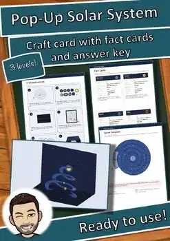

Pop-Up Solar System Craft | Planets Science Activity, Fact Cards & Quiz Gr 3-5
Q&A
Thumbnail
1
Thumbnail
2
Thumbnail
3
Thumbnail
4
View Preview
Share
Description
Open the card – and the solar system springs up as a spiral! Students cut out a paper spiral, glue the Sun and the eight planets in order, and fold everything into a card. When the card opens, the spiral pulls up into a 3D pop-up – a memorable model of the planet order. The "close-the-card trick" puts the spiral in exactly the right place automatically.
WHAT'S INCLUDED (31 pages):
- Spiral template (light version to color + color version), base card glue plan
- Planet stickers in color and for coloring (Sun + 8 planets)
- Step-by-step craft instructions with pictures, how the spiral works, materials & time plan, common mistakes & tips
- Fact cards for the planets + Pluto + a blank fact card
- Planet order & mnemonic page, science challenge
- Worksheets: How big are the planets? How far away are they? (with scale drawings), cloze text, crossword
- Quiz cards in 3 levels (★ easy, ★★ medium, ★★★ challenging), planet memory game
- "I can do it!" self-assessment, complete answer keys
- Teacher notes with science notes and differentiation
LEARNING GOALS: order of the planets, rocky planets vs. gas and ice giants, comparing sizes and distances, using a model to explain the solar system.
STANDARDS: supports NGSS ESS1 (Earth's Place in the Universe, e.g. 5-ESS1-1) and the science practice "developing and using models".
MATERIALS: construction paper or cardstock (US Letter or A4), scissors, glue stick, colored pencils, optional white gel pen for stars.
TIME: crafting about 65 minutes + science section (45 minutes or more).
PERFECT FOR: space units, science centers, STEAM projects, open house displays.
Format: A4 PDF – prints on US Letter (8.5 × 11 in) as well. All graphics are original vector drawings made by the author; texts were written with AI assistance and carefully checked by the author.